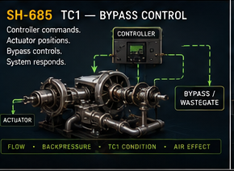

01
Water solutions
High-purity water concepts for industrial and specialized applications, subject to product qualification.
Explore waterTrinity Continuum is advancing a modular industrial system designed to coordinate high-purity water production, electrical generation, and useful thermal-energy recovery.
An engineering development program focused on system integration, serviceability, and qualification for industrial applications.
Conceptual development · Technical claims subject to management approval and verification
An integrated utility platform organized around six modular trailer units. Explore the conceptual overview below; equipment assignments and fabrication geometry remain subject to approved engineering drawings.

Conceptual six-trailer diagram. Not a CAD fabrication drawing, installed equipment photo, or verified system configuration.
Controlled combustion, thermal-energy transfer, and associated primary equipment.
Public functional descriptions are based on Trinity management’s Phase 3 brief. Detailed engineering geometry is not disclosed.
Engineering approachHigh-purity water concepts for industrial and specialized applications, subject to product qualification.
Explore waterElectrical generation integrated into the proposed modular industrial utility architecture.
Explore powerEngineering pathways to capture and utilize heat for suitable process applications.
Explore thermalTrinity’s visual development library includes process-control and equipment illustrations. Individual scenes will be added as they receive technical and publication approval.
Explore engineering
The six-trailer flagship engineering and commercial development pathway.
Explore TexasA separate two-trailer product-development configuration with its own engineering basis.
Explore IndiaTrinity's planned approach emphasizes design control, inspection, manufacturing readiness, testing, and controlled revisions. The public website distinguishes proposed systems from manufactured or independently validated results.
Connect with Trinity Continuum regarding technical review, manufacturing collaboration, industrial applications, strategic partnerships, or confidential investment-package requests.